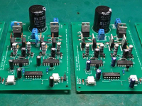
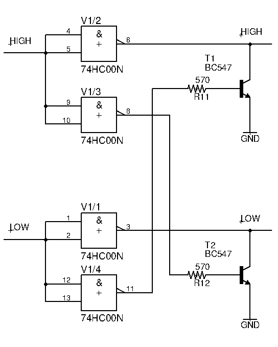
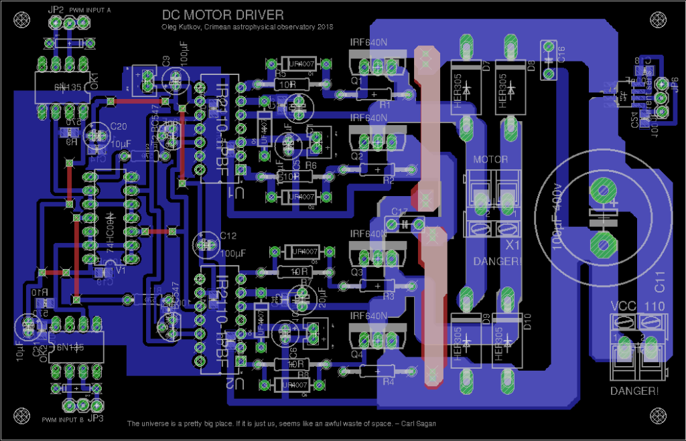

To control the DC motor’s speed and rotation direction, we need some motor driver. One of the most popular schematics is H-Bridge. For the low current and voltages, we can use some integral solutions like L293D and so on. But if we need more power and reliability, we have to build some custom H-bridge using Mosfet transistors. This type of transistor requires careful and proper driving itself. One of the most popular integral solutions for driving MOSFETs is IR2110 from Infineon.
This article will discuss how to use this IC to build a powerful DC motor driver.
IR2110 is a high voltage (up to 500V) chip that is suitable for driving various MOSFET and IGBT types. This device contains both low-side and high-side half-bridge drivers.
You can find pins description and other parameters in the datasheet.
Here is a typical schematic:
{kind=link}
This is a half-bridge driver, which means that LOAD pin can be connected to LOAD SUPPLY or AGND, depending on the input pins ENABLE HI and ENABLE LO. These signals can be a static voltage of the logic levels (3.3 to 5 volts) or some pulse signals like PWM.
Controlling the Q2 MOSFET is very simple and doesn’t require extra schematics.
With Q1, all things are slightly more complicated since the SOURCE pin of this transistor is floating without a direct connection to the power supply negative line.
To enable this transistor, we need to create a “virtual” zero point, and additional power is required.
This problem can be solved using bootstrap circuitry.
You can see diode D5 and two capacitors C1 and C2. When the low-side is active (Q2 is opened), both capacitors are charging through the diode from the IR2110 power supply (typically 12V). Then when the high-side becomes active, these capacitors are using to charge the Q1 gate and open this transistor.
The value of C1 depends on the switching frequency and duty cycle. Typically this value is in the range of 4.7 – 22 microfarads.
Of course, there is a formula that can be used to calculate a proper value. Please read this appnote if you want to know more about floating and bootstraps circuits.
But also, you can select the proper capacitor value experimentally. Proper value is guaranteed that the capacitor can discharge quickly enough to close the transistor and charge quickly enough to reach the required voltage value. Better to use tantalum capacitors, but the electrolyte is also Ok, but an additional ceramic bypass is required.
Diodes D1 and D2 provide a quick discharge circuit so both transistors can be closed immediately.
Diodes D7 and D9 protect MOSFETs from the large inductive loads and very necessary when driving motors.
Two resistors R5 and R6, are used to limit the gates’ charging current to protect transistors.
R2 and R1 is an additional protection circuit that prevents the Gate pin from floating and protects transistors from the enabling.
When both transistors enabling at the same time – it’s a big problem called shoot through. This is equivalent to a short circuit that can destroy both MOSFETs and ruin your day.
To avoid shoot-through of the MOSFETs, we need to ensure that ENABLE HI and ENABLE LO input pins are not activating simultaneously.
One of the ways is to use a simple protection circuit that is placed near the IR2110 input pins:
74HC00N is a quad 2-input NAND gate that acts like a cross-locking circuit.
A by-product of this schematic is inverting the signal, so we need to invert the actual input signal before.
When IN HI is low (for example) – output pins 6 and 8 are in the high state, and pin 6 drives IR2110 ENABLE HI input.
Simultaneously, pin 8 activates the T2 transistor, which pulls down ENABLE LOW line, which protects this line from unauthorized activation.
Another part of the schematics with T1 works in the same way.
{kind=link}
Full bridge driver.
To build a full H-bridge, we need two identical halves of the half-bridge.
In this case, ENABLE HI of the first IR2110 should be connected to the ENABLE LOW of the second IR2110 and vice versa.
The load is connecting between LOAD terminals of both halves.
Here is a full schematic of the driver, which I use for big 110 volt motors.
This device contains all protection circuits described above and provides galvanic isolation on inputs to safely connect the microcontroller as a PWM signal source.
This board requires two stabilized power supplies, 5 and 12 volts. The actual bridge is powering from a separate 110-volt source.
Also, you can find a current measurement circuit based on the hall-effect sensor ACS712. This part is not mandatory and is used in my current project.+

Diodes D11 and D12 are highly recommended for reliability. This diode provides a path for possible reverse currents (in long lines between drivers board and controller) in bad EMI conditions. Even a small reverse current can damage optocouplers led.
The values of the R9 and R10 should be selected for your variant of 74HC00. It may be or 570 ohms or 3.8 kiloohms. To debug this part, you need a scope that can help you control the form of the signal after 74HC00. But if you don’t have one – replace resistors till the schematic became working.
IR2110 Gerber files for the PCB factory
PCB images:
And both layers for DIY:
{kind=link}
{kind=link}
{kind=link}
Completed boards with medium power transistors.
{kind=link}
{kind=link}
And another variant with big transistors on the radiator. This device can drive more than 2 kilowatts load.
{kind=link}
{kind=link}
As you can see, powerful MOSFETs are placed on radiators, away from the driver boards.
This is permissible, but wire between boards and transistors should be as short as possible. Also, it’s a good idea to twist the SOURCE and GATE line as a differential pair. This helps us to minimize inductance.
Protection resistors on these lines should be placed as close as possible to the transistors.
You can see everything in the photos above.
Laboratory tests of this driver.
As a PWM signal source, I’m using a Siglent signal generator in Pulse mode. The frequency is 15 kHz, the duty cycle is changing, which is causes changes in motor rotation speed.
Thanks for reading!
I hope this material will be helpful.
Thanks!
Oleg, could you help with 400V, 15 A continuous, reversible (full H-bridge, >20 kHz), PMDC brushed motor speed controller? May be with LMG3410R070 or discrete transistors STB42N65M5 . I need compact and well protected
controllers for glaciers research; although industrial servo amplifiers worked well in mountains.
Hello.
Yes, I think I can help you. Seems LMG3410R070 is a good solution, highly integrated and powerful enough. You need 4 IC, some additional circuits and MCU to control one motor.
Can I contact you via email to discuss this device?
hi oleg. can you please tell me what kind of mode you are driving this motor? i mean : is it locked anti phase or sign magnitude or drive/ coast mode ?
\
Oleg, I was confused expecting your replay on my e-mail address. My fault.
I still need help with speed control of PMDC motor and that is why I get back
to your web site. But I am bit old for modern electronics.
If you are not disappointed with my response please send me e-mail and
I will provide you with details about my projects or/and we can talk over
Skype/phone.
Thank you.
Victor
Hello Oleg,
May I ask for your opinion – I have big bulgarian DC permanent magnet servo motor – Model 25 –
please see the table …
http://www.arteh-bg.com/pages/products/DC/3PI.html
2.5 KW and 47 kg … 🙂 ..
I want to use your h-bridge to drive this motor – can you suggest me proper N-channel mosfets to use in the H-bridge ?
Thank you in advance,
Emil – emilvv@gmail.com
thank you for this work
but! why did you use T1 & T2??
many thanks!
Hi!
I described this in the article. It’s just in case.
Protection circuit to prevent a shoot-through.
When “IN HI” is active T2 is pulling down “IN LOW” line so any signals on the “IN LOW” are blocked. And wise-versa.
Is there any way i can use this driver to control a 5kw brushed dc motor. I have bought all the components. I have replaced the mosfets with 60N60 600V 60A IGBT. I plan to use two igbts in parallel. Do i need to do any modifications? Is it okay if i boost the ir2110 output using external push-pull amplifier to get enough gate current?
P.S The motor is 78V 5kw. We are making a electric bike for our final year engineering project.
My email: khadkautsav639@gmail.com
It will be really great if you would help me a little bit. Thank you.
Hello. I never tried to use IGBT here, but it should be Ok. IR2110 is suitable for IGBT driving with a boost circuit.
Here is Infineon’s example: https://www.infineon.com/cms/en/tools/landing/ifxdesignerhtmlfiles/power_IR2110_HB_IGBT_drive_neg_bias.html
Can i connect AGND and GND together? Or is it wrong?
Yes. It’s safe. Those pins can be completely separated only when there are no voltage differences between the two lines.
Since its power and logic grounds, it’s better to connect both lines somewhere outside the high current paths, at one point. In my case, it was made inside the PSU that provides low and high voltages to the board. You can do it on the board. Just make sure that there is no strong current flow near the VSS pin.
Hi Oleg Kutkov… Thank You for sharing this project. I made one from the files you shared, but I have one problem that duty cycle only works for above 50%. When I try to lower it the motor fails to hold the speed and stall to 0 rpm… I wonder if you experienced the same problem? If there any suggestion I would very happy to see..thanks in advance .
I use 110V dc motor from my old treadmill.
Hello. Please try to play with C1 and C2 capacitors values. +- 10uF.
Also you can try to change your PWM frequency. But it’s better to select proper capacitors’ values.
Thank You for the quick reply.. i’ll try it soon
Hello oleg, thank you for the prompt replies.
I have one more question, i have used pc817 optocouplers to isolate my arduino and the ir2110. Is this configuration okay?
From the electrical point of view, yes, you can use this component. This optocoupler is quite old and has a frequency limit near 80 KHz, but probably even lower. So you can’t use it with high PWM rates.
But for low frequency (hundred of Hz), it’s ok.
I am intending to use it with arduino, the default pwm of arduino analogWrite(). Is it okay? Thank you.
I’m not using the Arduino language. But according to the documentation, it’s correct.
You can’t achieve the high PWM frequencies due to software manner and high overhead of the Arduino libraries. In this situation, your optocoupler looks okay.
Thank you soo much for your help, it has been priceless.
Hello oleg, your work is owesom
can i drive a PMDC Treadmill Motor ( 180vdc-4800rpm-6.2amp) with the same circuit or with a little modification.
I want a PWM control e.g Arduino output or so
Yeah, It should do the job. Just consider about decent heatsink.
Also, you can check out this version of the DC motor driver: https://olegkutkov.me/2021/01/30/compact-and-powerful-dc-driver-using-irs2104/
thank you very much for quick response, i’ll check the other one out and inform you about results.
hey oleg , sorry to annoy you,
A little confusion here , i want to drive the motor in one direction only, in half bridge configuration should i connect my motor
in between two mosfets or from load terminal to ground?
Incase of motor connected from load terminal to ground, do i need to keep the second mosfet?
can single HIGH/LOW side mosfet configuration will work as effective as two?
https://ibb.co/bdBFzNc
https://ibb.co/XsVqwVC
Oh, in this case, you don’t need IR2110.
Just use a simple specialized low-side MOSFET driver: https://www.infineon.com/cms/en/product/power/gate-driver-ics/low-side-drivers/
Corrected broken link, sorry.
Здравствуйте Олег. Поясните пожалуйста как работает логика управления двигателем. Я имею ввиду реверс например возможен?,
Здравствуйте.
Да, разумеется возможен. Подаёте ШИМ сигнал на JP2 – двигатель вращается в одну сторону, подаёте на JP3 – вращается в обратную.
Если управление скоростью не требуется – можно вместо ШИМ подавать просто 5 вольт на соответствующий вход. В таком случае двигатель будет вращаться с максимальной скоростью.
Если подать сигнал сразу на JP2 и JP3 – вращение будет заблокировано.
Спасибо. Повторил схему. Ещё вопрос… Если у меня двигатель потребляет 30 ампер при 16 вольтах, будет ли корректно работать драйвер 2110, если я для увеличения мощности моста буду использовать параллельное включение мосфетов, например по 2 или 3 параллельно? Этот вопрос возник, потому что мне не удалось найти мосфеты, которые безопасно работали бы на таких токах и напряжениях сток-исток…
С драйвером 2110 проблем возникнуть не должно. В данном случае я бы переживал за сами транзисторы. Силовые мосфеты не рекомендуется включать таким образом. Дело в том, что все транзисторы немного отличаются друг от друга и через каждый будеть течь разный ток, возникнет дисбаланс и транзисторы могут выйти из строя.
Пожалуй единственным исключением явлюется технология HEXFET: https://www.rfwireless-world.com/Terminology/HEXFET-vs-MOSFET.html
По сути это несколько мосфет тразнисторов, включенных параллельно, расположенных в одном корпусе, на одной подложке. Их параметры максимально идентичны, так что проблем с балансировкой токов не возникает.
Hi,do you have a circuit design that will make me the input voltage 250v-450 v ac 220v-380 v?
what is the max current for this pcb?
10-12 A
Thank you. Could this design be scaled with larger traces and higher amp nfets?
My goal is 50a continuous and around 100 peak.
Sure. It’s all about traces and connectors. You can use the variant with big external FETs like in my photo.
Also, you can reinforce PCB traces with additional wires soldered over. I can recommend drilling extra holes to reinforce VIAs.
It would be great to replace connectors with something much more robust.
Then it should be good.
Is the limiting factor the trace size? If I make them wider and thicker copper, could this be scaled to 50 or 100 amps with the right NFETS?
to retrofit a late machine i need a driver for the spindle motor DC 15kw 250V 75A
i’m not an electronic expert is it possible to diy ? would be nice if i can controle it with puls direction
or where can i find such a driver ready for use
Hello Oleg, first of all I am grateful for sharing your circuit, I am going to try to replicate it, and I would like to ask you I am going to use a TL494 in push pull mode as a pwm generator. I understand from this that IC 74HC00N to protect against false triggers is not necessary ?
Another question C16 and C17, what values does it have since it does not show it in your diagram?
Thank you very much, I await your kind reply
Hello Adrian,
Yes, that’s correct.
Hey, How are you braking the motors? How are you created path for current created by the motor coils ?. I don’t see any logic to close both upper/lower mosfets together ? .Thanks !
Hello. Braking was not provided for in that project. You can modify the schematic to remove the protection.
Is there any way i can use this driver to control a 2.6 kw brushless dc motor. Do i need to do any modifications? Is it okay if i boost the ir2110 output using external push-pull amplifier to get enough gate current?
P.S The motor is 64V 2.6kw. We are making a electric vehicle for our engineering project.
Thank you
Hello. Unfortunately not. It’s better to use a proper 3-phase motor driver IC.
For example: https://www.monolithicpower.com/en/mp6539.html